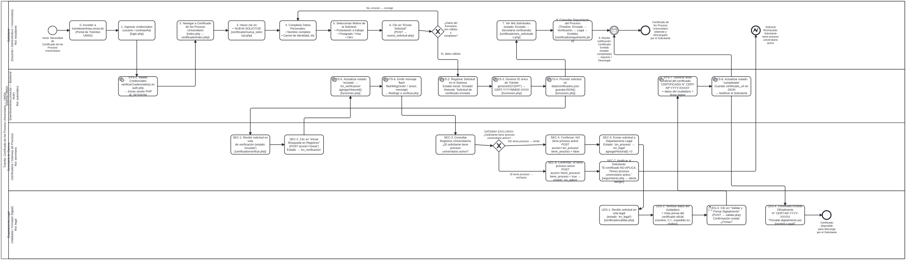

Plataforma BPM modular para modelar, gestionar y validar solicitudes académicas y administrativas dentro de la universidad.
Nota: Asegúrate de tener corriendo el servidor con `node server.js` para acceder a la aplicación PHP.
Iniciar Aplicación PHPVista previa interactiva de los diagramas de secuencia del proceso modelado en Bizagi / Camunda.
